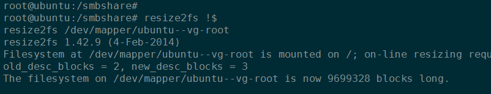

6. Ubuntu根分区使用Lvm扩容¶
ubuntu 根分区剩余空间不足，影响工作，因此通过lvm工具对根文件系统进行扩容
Note
系统版本：ubuntu-14.04 LTS
6.1. 使用新硬盘扩展根文件系统¶
新建一块硬盘并进行分区：
fdisk /dev/sde
依次键入n, 创建新分区；然后分区类型选择p; 其他默认输入即可。

图1：创建新分区
分区创建完成后，修改分区类型为lvm:

图2：修改分区类型
格式化分区：
mkfs.ext4 /dev/sde1
创建新PV：
pvcreate /dev/sde1
查看卷组信息，并扩展根系统所在卷组：

图4：查看卷组信息

图5：扩展卷组
扩展根文件系统所在逻辑卷组；

图6：根文件系统信息

图7：扩展逻辑卷
使得扩容生效：
图8：执行扩容命令

图9：根文件系统可用空间已经增大
{kind=link}
{kind=link}
6.2. 用未完全使用硬盘扩展根文件系统¶
假如没有新硬盘可用，并且系统挂载的硬盘有空闲扇区。那么可以通过空闲扇区新建分区来进行扩展。
# 对已经使用但是没有完全使用的分区进行lvm扩容。
# 比如，有vda,总容量为500G，但是只有两个分区:vda1和vda2且只用了10G。
# 因此可以使用下面的命令进行操作新建分区。
# 对于一块完整的未使用的硬盘，参考原来写的。
[root@host-13-13-13-4 ~]# fdisk /dev/vda
WARNING: DOS-compatible mode is deprecated. It is strongly recommended to
switch off the mode (command 'c') and change display units to
sectors (command 'u').
Command (m for help): p
Disk /dev/vda: 214.7 GB, 214748364800 bytes
16 heads, 63 sectors/track, 416101 cylinders
Units = cylinders of 1008 * 512 = 516096 bytes
Sector size (logical/physical): 512 bytes / 512 bytes
I/O size (minimum/optimal): 512 bytes / 512 bytes
Disk identifier: 0x000b404e
Device Boot Start End Blocks Id System
/dev/vda1 * 3 1018 512000 83 Linux
Partition 1 does not end on cylinder boundary.
/dev/vda2 1018 20806 9972736 8e Linux LVM
Partition 2 does not end on cylinder boundary.
Command (m for help): n
Command action
e extended
p primary partition (1-4)
p
Partition number (1-4): 3
First cylinder (1-416101, default 1):
Using default value 1
Last cylinder, +cylinders or +size{K,M,G} (1-2, default 2):
Using default value 2
Command (m for help): n
Command action
e extended
p primary partition (1-4)
p
Selected partition 4
First cylinder (20806-416101, default 20806):
Using default value 20806
Last cylinder, +cylinders or +size{K,M,G} (20806-416101, default 416101):
Using default value 416101
Command (m for help): p
Disk /dev/vda: 214.7 GB, 214748364800 bytes
16 heads, 63 sectors/track, 416101 cylinders
Units = cylinders of 1008 * 512 = 516096 bytes
Sector size (logical/physical): 512 bytes / 512 bytes
I/O size (minimum/optimal): 512 bytes / 512 bytes
Disk identifier: 0x000b404e
Device Boot Start End Blocks Id System
/dev/vda1 * 3 1018 512000 83 Linux
Partition 1 does not end on cylinder boundary.
/dev/vda2 1018 20806 9972736 8e Linux LVM
Partition 2 does not end on cylinder boundary.
/dev/vda3 1 2 976+ 83 Linux
/dev/vda4 20806 416101 199229144 83 Linux
Partition table entries are not in disk order
Command (m for help): t
Partition number (1-4): 3
Hex code (type L to list codes): 8e
Changed system type of partition 3 to 8e (Linux LVM)
Command (m for help): t
Partition number (1-4): 4
Hex code (type L to list codes): 8e
Changed system type of partition 4 to 8e (Linux LVM)
Command (m for help): w
The partition table has been altered!
Calling ioctl() to re-read partition table.
WARNING: Re-reading the partition table failed with error 16: 设备或资源忙.
The kernel still uses the old table. The new table will be used at
the next reboot or after you run partprobe(8) or kpartx(8)
Syncing disks.
[root@host-13-13-13-4 ~]# reboot
6.3. 命令参考和自动化脚本¶
fdisk 命令新建好分区后，扩展根文件系统的相关命令以及自动化脚本。
fdisk /dev/sde
# 新建分区完成后，需要重读分区表。
# 如果重读分区表命令不可行，可以reboot重启系统。
partprobe
fdisk /dev/sde
mkfs.ext4 /dev/sde1
pvcreate /dev/sde1
vgdisplay
df -hl
vgextend ubuntu-vg /dev/sde1
lvdisplay
lvextend -L 37G /dev/mapper/ubuntu--vg-root
resize2fs /dev/mapper/ubuntu--vg-root
更新: 2017-05-08 16:17
Important
最近在centos7系统进行lvm扩容的时候，总是提示 Bad magic number in super-block while trying to open /dev/mapper/centos-root ，
(原来在centos-6.5系统扩容时没有这个问题)！经过搜索，发现可以用另外一个命令进行扩容！
xfs_growfs $LVM_ROOT

提示bad magic number错误
以下是自动化脚本，供参考，经测试可以直接复制使用！唯一需要注意的是扩展后的空间大小！
# 然后使用下面的命令扩展根文件系统
mkfs.ext4 /dev/vda4
pvcreate /dev/vda4
VG_NAME=`vgdisplay| grep "VG Name" | awk '{print $3}'`
vgextend $VG_NAME /dev/vda4
#LVM_ROOT=`df -hl | grep "/dev/mapper" | awk '{print $1}' | cut -d "/" -f4`
LVM_ROOT=`df -hl | grep "/dev/mapper" | awk '{print $1}'`
lvextend -L 190G $LVM_ROOT
#resize2fs /dev/mapper/VolGroup-lv_root
resize2fs $LVM_ROOT